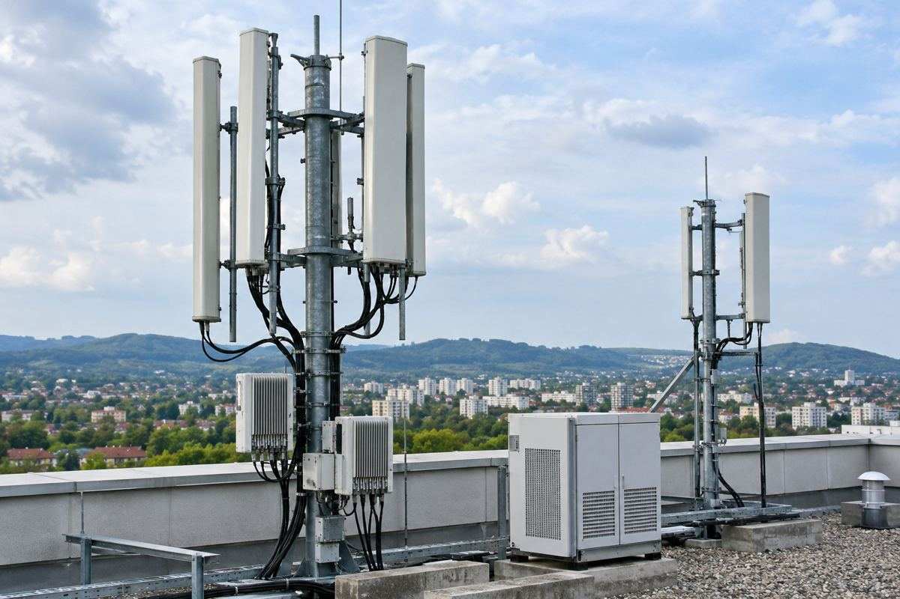

통신 인프라 / EXPLAINED
Starlink Mobile에 퀄컴 기지국 칩…이번 발표는 지상의 5G다
2027년 미국 구축 시작을 목표로 한다. 위성 접속과 지상 기지국, 앞으로의 6G 구상을 구분해야 한다.

퀄컴이 11월 4일 SpaceX의 Starlink Mobile 미국 지상 5G망에 Dragonwing 통신 인프라 플랫폼을 공급한다고 발표했다. 적용 대상은 위성에 들어가는 스마트폰 칩이 아니라 지상 기지국의 무선·분산 처리 장비다. SpaceX는 2027년 구축을 시작하고 다년 계약에 걸쳐 수만 개 사이트를 배치할 계획이라고 설명했다. 발표 당일 전국 서비스가 개통됐다는 뜻은 아니다.
위성 브랜드 아래의 지상망
퀄컴은 스마트폰용 반도체와 통신 기술로 알려졌지만 기지국 등 인프라용 플랫폼도 만든다. Starlink는 위성 통신으로 익숙한 이름이어서 이번 계약 역시 위성과 휴대전화 사이의 직접 연결로 오해하기 쉽다. 그러나 공식 발표가 명시한 범위는 지상 5G 기지국이다. 회사는 위성과 지상을 통합하는 장기 구상을 말하지만, 이번 공급 장비의 역할과 현재 확인된 배포 단계는 구분해야 한다. 두 연결 방식이 같은 브랜드 안에 있어도 물리적인 망 구성은 다르다.
선정된 제품은 Dragonwing QRU100과 QDU100이다. 회사 설명에서 QRU100은 무선 장치 쪽 처리를, QDU100은 지연에 민감한 물리계층 처리 등을 담당한다. 물리계층은 정보를 실제 무선 신호로 보내고 받는 데 가까운 단계다. 스마트폰 안의 앱이 빠르다는 설명과는 다른 종류의 연산이다. 기지국은 많은 단말의 신호를 동시에 처리해야 하므로 처리량과 전력, 지연을 함께 고려한다. 이처럼 인프라용 칩의 변화는 사용자가 만지는 기기 바깥에서 통신 경험을 만드는 요소다.
64T64R을 속도 배수로 읽지 않기
발표에는 64개 송신과 64개 수신 경로를 쓰는 Massive MIMO 구성이 등장한다. 여러 안테나 경로를 이용해 통신 용량과 주파수 활용을 높이려는 설계다. 그러나 숫자 64가 한 사람의 휴대전화 속도를 64배로 만든다는 뜻은 아니다. 실제 속도는 주파수와 대역폭, 기지국까지 거리, 접속자 수, 백홀 연결 등 여러 조건의 영향을 받는다. 공식 자료의 설계 목표를 실제 전국망에서 측정한 이용자 속도로 바꿔 적어서는 안 된다.
회사는 효율적인 처리가 사이트마다 소비하는 전력과 구축 경제성을 개선하도록 설계됐다고 밝혔다. 장비 하나의 전력 효율과 전체 망의 총 전력 사용량도 구분할 필요가 있다. 사이트 수와 이용량이 늘면 전체 소비량은 별도로 달라질 수 있다. 이번 발표에는 모든 설치 지역과 상용 요금제, 일반 가입자의 정확한 이용 시작일이 제시되지 않았다. ‘미국 전국’이라는 목표가 한국을 포함한 세계 동시 서비스를 확정하는 것도 아니다. 독자는 자신의 통신사와 이용 지역에 적용되는 공지를 따로 확인해야 한다.
두 회사는 향후 AI 기반 6G 발전을 위한 토대라는 표현도 썼다. 하지만 이번에 배치한다고 밝힌 것은 5G다. 장기 기술 방향과 당장 계약한 상용 장비를 나눠 읽으면 미래 규격을 이미 제공하는 것처럼 오해하지 않을 수 있다. 소비자에게 의미 있는 후속 자료는 실제 구축 지역, 연결 가능한 단말과 가입 조건, 운영 중인 망의 품질 측정이다. 현재 확정된 소식은 공급 플랫폼 선정과 2027년부터의 구축 계획이다. 스마트폰 교체나 새로운 요금제 가입을 지금 결정할 만큼의 세부 서비스 정보는 아직 공개되지 않았다.